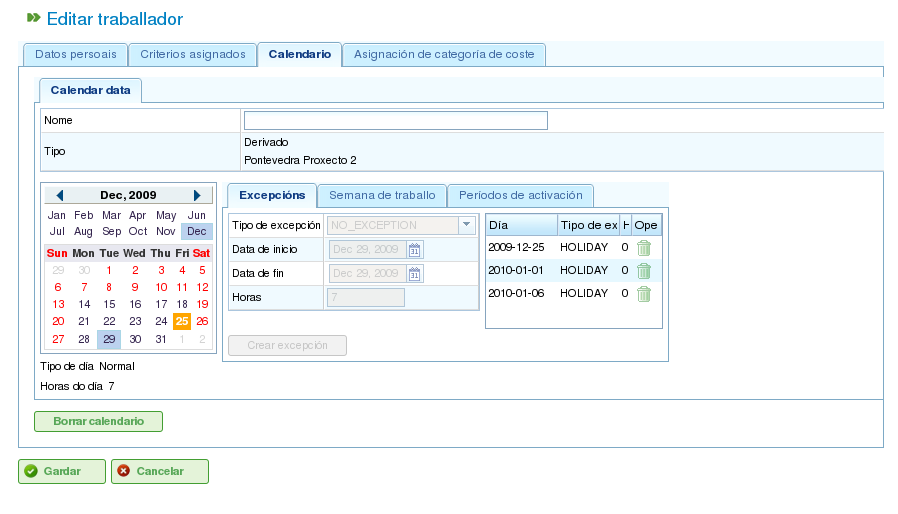

行事曆
行事曆是程式中定義資源工作能力的實體。行事曆由一年中的一系列天數組成，每天劃分為可用的工作時數。
例如，公眾假日可能有 0 個可用工作時數。相反，典型的工作日可能有 8 小時被指定為可用工作時間。
定義一天工作時數的主要方式有兩種：
- 按星期幾： 此方式為一週中的每一天設定標準工作時數。例如，星期一通常可能有 8 個工作時數。
- 按例外： 此方式允許偏離標準星期幾排程的特定例外。例如，1 月 30 日（星期一）可能有 10 個工作時數，覆蓋標準星期一排程。
行事曆管理
行事曆系統是層次結構的，允許您建立基本行事曆，然後從中衍生新的行事曆，形成樹狀結構。從較高層級行事曆衍生的行事曆將繼承其每日排程和例外，除非明確修改。為了有效管理行事曆，理解以下概念非常重要：
- 天數獨立性： 每天都是獨立處理的，每年都有自己的一組天數。例如，如果 2009 年 12 月 8 日是公眾假日，這並不自動意味著 2010 年 12 月 8 日也是公眾假日。
- 基於星期幾的工作日： 標準工作日基於星期幾。例如，如果星期一通常有 8 個工作時數，那麼所有年份所有週的所有星期一都將有 8 個可用時數，除非定義了例外。
- 例外和例外期間： 您可以定義例外或例外期間，以偏離標準星期幾排程。例如，您可以指定單一天或一段時間內的可用工作時數與這些星期幾的一般規則不同。

行事曆管理
可透過「管理」選單存取行事曆管理。從那裡，使用者可以執行以下操作：
- 從頭建立新行事曆。
- 建立從現有行事曆衍生的行事曆。
- 建立現有行事曆的副本行事曆。
- 編輯現有行事曆。
建立新行事曆
要建立新行事曆，請點擊「建立」按鈕。系統將顯示一個表單，您可以在其中設定以下內容：
- 選擇索引標籤： 選擇您要使用的索引標籤：
- 標記例外： 定義標準排程的例外。
- 每天工作時數： 定義每個工作日的標準工作時數。
- 標記例外： 如果您選擇「標記例外」選項，您可以：
- 在行事曆上選擇特定日期。
- 選擇例外類型。可用類型包括：假日、病假、罷工、公眾假日和工作假日。
- 選擇例外期間的結束日期。（對於單日例外，此欄位不需要更改。）
- 定義例外期間各天的工作時數。
- 刪除之前定義的例外。
- 每天工作時數： 如果您選擇「每天工作時數」選項，您可以：
- 定義每個工作日（星期一、星期二、星期三、星期四、星期五、星期六和星期日）的可用工作時數。
- 為未來期間定義不同的每週工時分配。
- 刪除之前定義的工時分配。
這些選項允許使用者根據其特定需求完全自訂行事曆。點擊「儲存」按鈕以儲存對表單所做的任何更改。

編輯行事曆

新增行事曆例外
建立衍生行事曆
衍生行事曆是基於現有行事曆建立的。它繼承原始行事曆的所有功能，但您可以對其進行修改以包含不同的選項。
衍生行事曆的一個常見使用案例是當您有一個國家（例如西班牙）的一般行事曆，而您需要建立衍生行事曆以包含特定地區（例如加利西亞）的額外公眾假日。
重要的是要注意，對原始行事曆所做的任何更改都將自動傳播到衍生行事曆，除非在衍生行事曆中定義了特定例外。例如，西班牙的行事曆在 5 月 17 日可能有 8 小時工作日。但是，加利西亞的行事曆（衍生行事曆）在同一天可能沒有工作時數，因為那是地區公眾假日。如果後來將西班牙行事曆更改為 5 月 17 日那週每天有 4 個可用工作時數，加利西亞行事曆也將更改為那週每天有 4 個可用工作時數，但 5 月 17 日除外，由於定義的例外，該天仍將是非工作日。

建立衍生行事曆
要建立衍生行事曆：
- 前往 管理 選單。
- 點擊 行事曆管理 選項。
- 選擇您要用作衍生行事曆基礎的行事曆，然後點擊「建立」按鈕。
- 系統將顯示一個編輯表單，其特性與從頭建立行事曆的表單相同，但建議的例外和每個工作日的工作時數將基於原始行事曆。
透過複製建立行事曆
複製行事曆是現有行事曆的精確副本。它繼承原始行事曆的所有功能，但您可以獨立修改它。
複製行事曆和衍生行事曆之間的關鍵區別在於原始行事曆的更改如何影響它們。如果原始行事曆被修改，複製行事曆保持不變。但是，衍生行事曆會受到對原始行事曆所做更改的影響，除非定義了例外。
複製行事曆的一個常見使用案例是當您有一個地點（例如「蓬特韋德拉」）的行事曆，而您需要另一個地點（例如「拉科魯尼亞」）的類似行事曆，其中大多數功能相同。但是，對一個行事曆的更改不應影響另一個行事曆。
要建立複製行事曆：
- 前往 管理 選單。
- 點擊 行事曆管理 選項。
- 選擇您要複製的行事曆，然後點擊「建立」按鈕。
- 系統將顯示一個編輯表單，其特性與從頭建立行事曆的表單相同，但建議的例外和每個工作日的工作時數將基於原始行事曆。
預設行事曆
其中一個現有行事曆可以被指定為預設行事曆。除非指定了不同的行事曆，否則此行事曆將自動分配給系統中使用行事曆管理的任何實體。
要設定預設行事曆：
- 前往 管理 選單。
- 點擊 設定 選項。
- 在 預設行事曆 欄位中，選擇您要用作程式預設行事曆的行事曆。
- 點擊 儲存。

設定預設行事曆
為資源分配行事曆
資源只有在具有有效啟用期間的分配行事曆時才能被啟用（即有可用工作時數）。如果沒有行事曆分配給資源，預設行事曆將自動分配，啟用期間從開始日期開始且沒有到期日。

資源行事曆
但是，您可以刪除之前分配給資源的行事曆，並基於現有行事曆建立新的行事曆。這允許對個別資源的行事曆進行完整自訂。
要為資源分配行事曆：
- 前往 編輯資源 選項。
- 選擇一個資源並點擊 編輯。
- 選擇「行事曆」索引標籤。
- 行事曆及其例外、每天工作時數和啟用期間將會顯示。
- 每個索引標籤將有以下選項：
- 例外： 定義例外及其適用期間，例如假日、公眾假日或不同的工作日。
- 工作週： 修改每個工作日（星期一、星期二等）的工作時數。
- 啟用期間： 建立新的啟用期間，以反映與資源相關合約的開始和結束日期。見下圖。
- 點擊 儲存 以儲存資訊。
- 如果您想更改分配給資源的行事曆，請點擊 刪除。

為資源分配新行事曆
為專案分配行事曆
專案可以有與預設行事曆不同的行事曆。要更改專案的行事曆：
- 在公司概覽中存取專案清單。
- 編輯相關專案。
- 存取「一般資訊」索引標籤。
- 從下拉選單中選擇要分配的行事曆。
- 點擊「儲存」或「儲存並繼續」。
為任務分配行事曆
與資源和專案類似，您可以為個別任務分配特定的行事曆。這允許您為專案的特定階段定義不同的行事曆。要為任務分配行事曆：
- 存取專案的規劃檢視。
- 在您要分配行事曆的任務上按右鍵。
- 選擇「分配行事曆」選項。
- 選擇要分配給任務的行事曆。
- 點擊 接受。